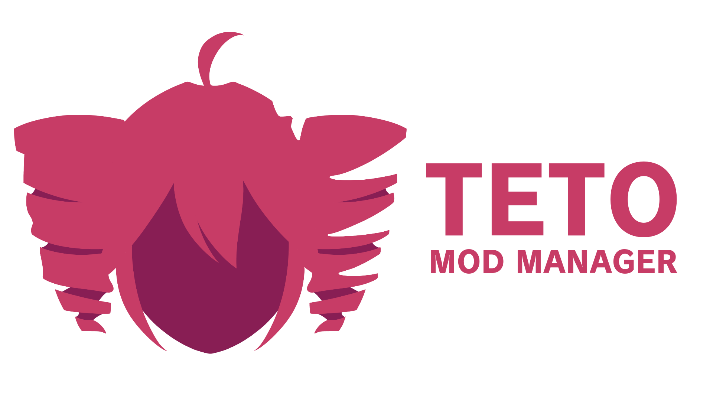

Welcome to Teto Mod Manager
This is an early alpha build and as a result many things may not work as intended.
The final build of TMM will also look a lot nicer, as well as a better layout. Currently, I'm focusing on getting this mod manager working.
For now, you can use this mod manager to manage installed mods, but you will need to manually install the mods.
If you have any questions or concerns, feel free to message me on discord.
You can also join the Mega Mix+ Modding Server to get help from other modders.
Thanks for using Teto Mod Manager!
-testsnake